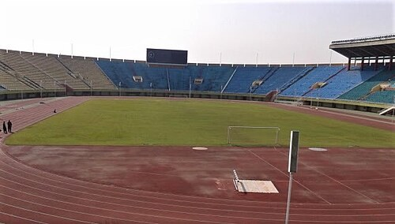

Writing
I write short fiction in both Urdu and English, and have been doing it since 2019. It started with Urdu short stories at Cadet College Hasan Abdal, and I still think Urdu is the harder of the two to do properly.
Most of it ends up on my Substack. Writing for the NUST Drama Club was a different kind of practice, since a script has to actually work when other people are reading it out loud.
Reading
I read a mix of fiction and non-fiction, and I keep a list going that I never finish. Fiction mostly, then whatever I can get hold of on data and machine learning, which tends to be drier than I expect.
When I cannot sit down and read properly I put on an audiobook and walk, usually somewhere on campus or on the way back from Wah.
Field hockey and football

Field hockey is the one I have played longest, mostly at college level. Football is what I get pulled into more often, usually because someone is short of players.
Either way it is the best excuse I have for putting the laptop down for an afternoon.
Game development
For one of my courses I built a small game in Unreal Engine. It was far more work than I expected and it is not a game anyone would want to play, but it is the reason I started looking at the technical side of game design rather than just writing design documents nobody reads.
I am not sure what I am making next. Something small, probably, with a scope I can actually finish this time.